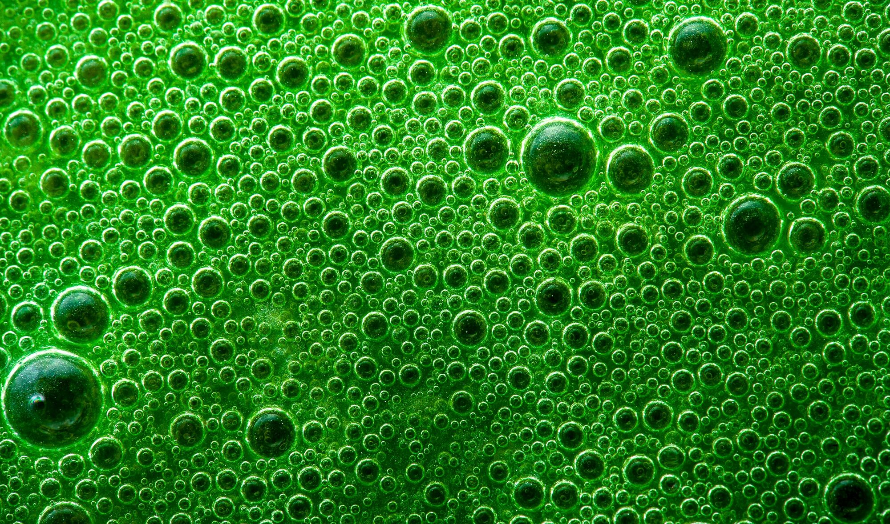

Matcha & Coffee in Pretoria East
Welcome to Wabi Sabi, a quiet coffee and matcha shop where you can pause, breathe and be present. Imperfect, unhurried and made for you.
View Our MenuHot or iced matcha, made with care
Our menu is small and simple. Choose a hot or iced matcha latte, such as the strawberry matcha iced latte, vanilla matcha latte or hibiscus matcha, or stay classic with an espresso, cappuccino, flat white or mocha. Browse the full matcha and coffee menu, or take a look at the photo gallery to see how it’s made.
What does wabi sabi mean?
Wabi sabi is a Japanese way of finding quiet, deep meaning in imperfection. It shapes everything we do, from how we whisk our matcha to the calm space we’ve made for you to slow down. Read our story and what wabi sabi means to us.
Visit us in Pretoria East
Find our opening hours, address and a map with directions on the contact page. Have a question, or an idea we could work on together? Send us an enquiry.